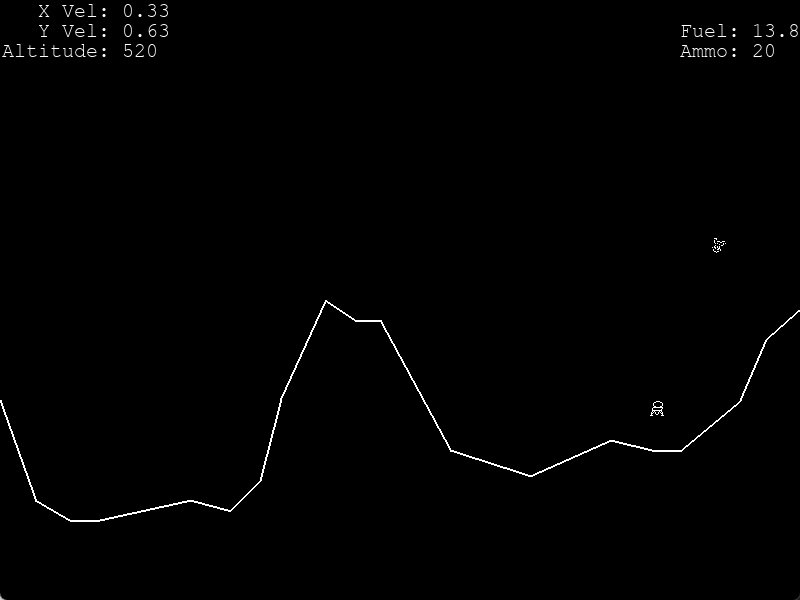
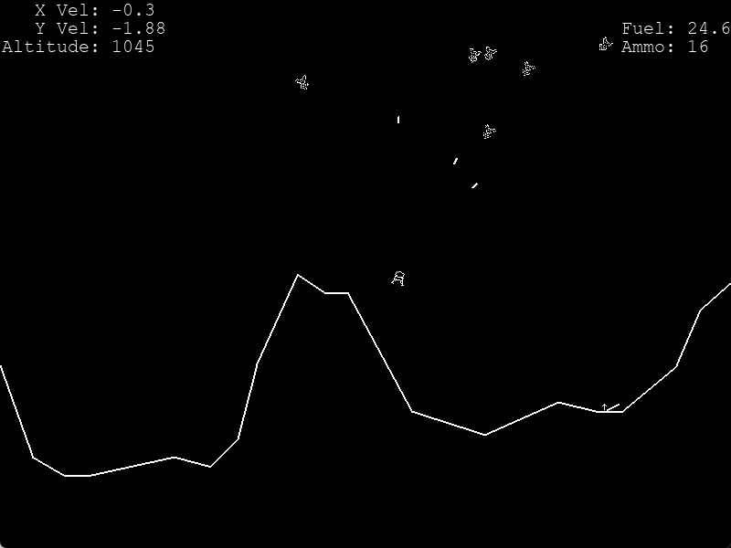

This project began with inspiration from the 1979 arcade game of the same name, Lunar Lander. I captured the aesthetic well, although the gameplay here involves piloting the craft to shoot invaders; rather than flying to, and landing on the moon.
You have a limited amount of fuel, so have to land on the moon to refuel. However, you can only land on the areas that are flat enough, and will crash if the surface is too steep.
Ammo is also in limited quantities, and this can be replenished by picking up supply crates which are periodically dropped. There is also a weapons power-up, which will increase the velocity of your shots for a short time.
 To test if the craft is able to land, it first checks if it is touching one of the ground segments, and if that segment's slope is shallow enough that a landing is possible. Each of these being a straight line makes this a very simple calculation to do. Then it checks if the velocity of the craft is low enough and that the craft is upright enough, so that it wouldn't just crash. If all is fine, then the velocity will be set to 0 to prevent drift, and a landed flag is set true. Otherwise, the craft will explode.
The enemies' movement works by each of them being given a random offset from the player, which they aim to move towards; they also hover up and down at the same time. Every now and then, this offset is flipped so that the enemy moves to the other side of the player. This simple way of getting them to move makes them more interesting opponents. The method responsible for this movement is shown below.
def move(self):
if random.random() < 0.05 and abs(self.rect.x - self.lander.rect.x) > abs(self.x_offset) - 20:
self.x_offset *= -1
self.angle = self.angle_to((max(min(self.lander.rect.centerx + self.x_offset, 795), 5),
self.lander.rect.centery))
self.limit = max(self.lander.rect.y - 200, 100)
if self.rect.y <= self.limit - 30:
self.go_up = False
elif self.rect.y >= self.limit + 30:
self.go_up = True
if not self.go_up or self.angle >= 180:
self.yvel += 0.2 * math.sin(math.radians(self.angle))
elif self.go_up:
self.yvel -= 0.2 * math.sin(math.radians(self.angle))
self.xvel -= 0.3 * math.cos(math.radians(self.angle))
self.xvel *= 0.95
self.yvel *= 0.95
self.rect.x += self.xvel
self.rect.y += self.yvel
self.angle = self.angle_to(self.lander.rect.center)
self.angle %= 360